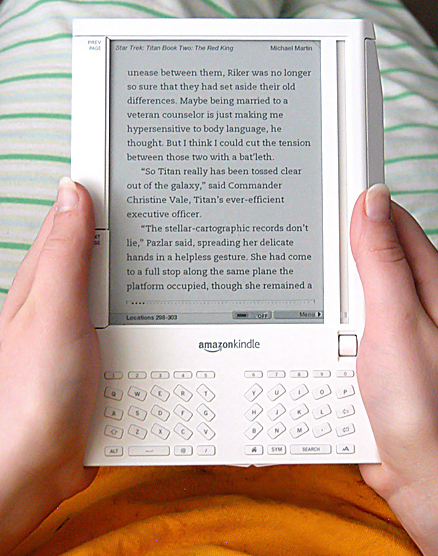

Amazon Kindle
Amazon Kindle — серия устройств для чтения электронных книг, выпускаемая компанией Amazon. Устройства Amazon Kindle позволяют пользователям делать покупки, загружать, просматривать и читать электронные книги, газеты, журналы, блоги и другие цифровые медиаданные через беспроводную сеть.
Устройства Kindle имеют дисплеи на основе технологии электронных чернил (E-Ink) — последнее поколение обрабатывает 16 градаций серого для имитации чтения на бумаге при минимальном энергопотреблении; могут скачивать контент из сети Amazon Whispernet, используя EVDO-сеть Sprint или 3g-сеть AT&T в зависимости от версии устройства. Kindle может использоваться без персонального компьютера, причём использование Whispernet бесплатно. Кроме того, устройство предоставляет доступ к сети Интернет. Устройства Kindle долгое время были доступны только в США, с 19 октября 2009 года компания Amazon.com стала поставлять устройство Kindle 2 для международных покупателей.
Впервые устройство Kindle появилось в интернет-магазине Amazon в ноябре 2007 года по цене в 399 долларов. Приготовленные к продаже устройства были распроданы всего за 5,5 часов, после чего продажи возобновились лишь в апреле 2008 года. Постепенно цена была снижена, сначала до 359 долларов, затем до 299.
Устройство имело 6-дюймовый чёрно-белый дисплей с четырьмя градациями яркости. 250 мегабайт встроенной памяти вмещают около 200 неиллюстрированных книг. Для расширения памяти имеется разъём SD-карт.